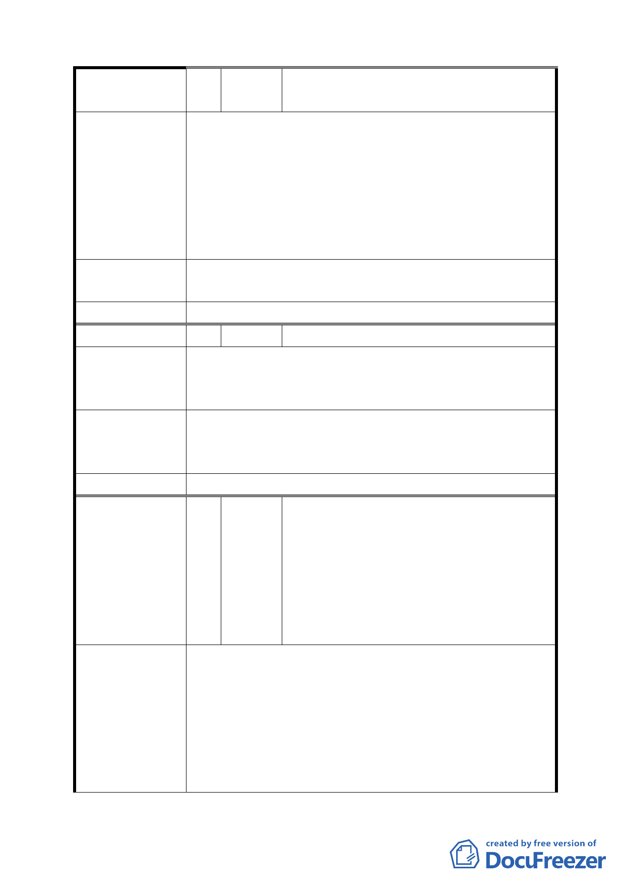

編號
陳情理由
建議辦法
委員會決議
編號
陳情理由
建議辦法
委員會決議
編號
陳情理由
12 陳情人 永安里里辦公處里長劉春長(含連署人共
11 人)(中山區培英市場)
一、本址於 90 年起里長已陸續提案希望興建綜合性大
樓，皆未獲得正面回應。
二、本里目前人口近萬人，戶數 3634 戶，乃中山區最大
里，卻苦無里民活動中心可供里民使用。因本址位於
永安國小及明水公園旁，亦屬本里之中心點，里民來
往便利，若能興建綜合性大樓，則不僅嘉惠學校，里
民也會有超高之使用率。
建議興建綜合性大樓，且對於社會局有意興建殘障老人
養護中心里民反對聲浪大，建議另覓郊區為宜。
同編號 4。
13 陳情人 盧美月(文山區樟新市場)
一壽街已有重殘養護中心，都市計畫單位不宜再建機關
用地，讓社會局重覆設置養護中心(居民強烈反對)。應
於北市各區平均分攤養護中心設置。
本社區嚴重缺乏停車場設備，可否增機停車場，其他樓
層可設置藝文中心(如定期放電影)、室內運動中心、老
人活動中心、兒童才藝中心等。
同編號 1。
臺北市內湖區金湖里天景社區管委會、琥
珀社區管委會、麗景社區管委會、伊莉莎
白社區管委會、香草山莊社區管委會、皇
14 陳情人 家山莊社區管委會、亞歷山大社區管委
會、上隱社區管委會、湖麗 Double 社區
管委會、雅璞春秋社區管委會及麗湖園社
區住戶等連署 (內湖區湖洲市場)
一、遽聞內湖區金湖里 363 巷現有公園(即變更範圍)在
未經告知絕大多數住戶與同意下將規畫變更為多功
能商業或市場用途，建請市府查明現狀並緩議。
二、該公園係去年由邱金波里長、李彥秀議員及金湖里
社區住戶爭取，並蒙市府補助經費所興建，除解決
本地多年來荒廢髒亂危險知情形，也提升本地區生
活品質。如遽予廢除公園變更用途，恐生浪費公帑
- 15 -